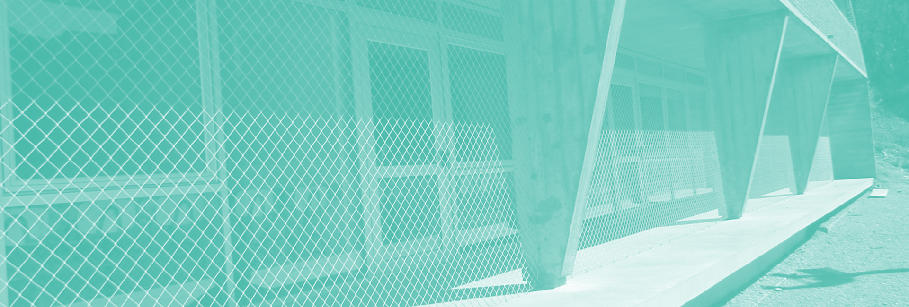

NOVEDADES
Plan de Desarrollo Institucional 2020-2025
NOVEDADES
Plan de Desarrollo Institucional 2020-2025
El jueves 30 de julio a las 17hs en la sala de actos de ISEF (ingreso sujeto al protocolo de ingreso) en Parque Batlle se realizará la mesa de lanzamiento del Plan de Desarrollo Institucional 2021-2025 en la que expondrán Dr. Gianfranco Ruggiano (Director ISEF) y Prof. Rodrigo Arim (Rector de la UDELAR).
La actividad se transmitirá vía Plataforma Zoom, se podrá acceder con los siguientes datos:
Tema: Mesa Lanzamiento PDI ISEF 2021-2025
Unirse a la reunión Zoom: https://salavirtual-udelar.zoom.us/j/92981311078
ID de reunión: 929 8131 1078
Siendo el ISEF de la Universidad de la República una institución que ha atravesado importantes y vertiginosas adaptaciones al ámbito universitario, la Dirección de ISEF entiende conveniente dar inicio a un proceso de elaboración de un «plan de desarrollo institucional para el período 2021-2025. Este documento permitiría establecer lineamientos generales que orienten los procesos colectivos de toma de decisiones de una todavía novel institución universitaria que aspira a consolidarse dentro de la UDELAR, alcanzando los más amplios niveles de autonomía posibles.